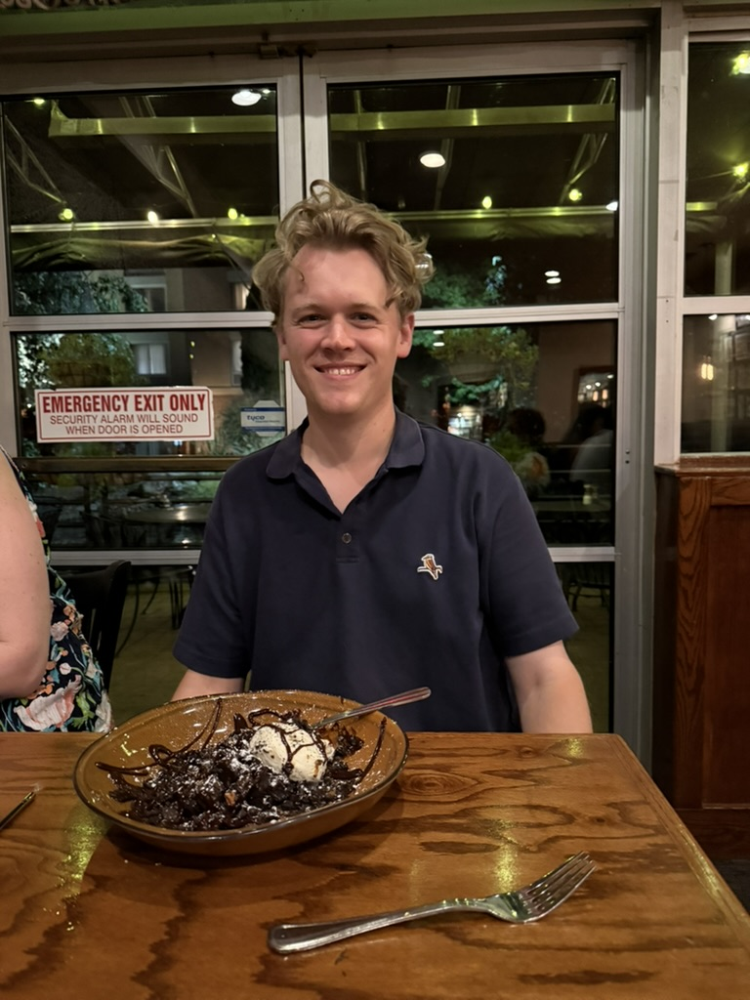

Senior Staff Data Engineer - FanDuel
March 2026 - Incoming
Next chapter: scaling data and AI systems in a high-throughput consumer platform environment.
Baxter Sapp
Atlanta, GA
Principal Data Engineer with a decade of experience architecting scalable data systems, ML pipelines, and search/recommendation engines across startups and enterprise environments.
Transition update: CarMax ended February 23, 2026. FanDuel starts March 2026.
I build data products that move markets, sharpen customer experiences, and turn messy systems into competitive advantage.
My work spans Python, Spark, Snowflake, Databricks, and Azure, with a focus on production AI, high-signal search, and decision-grade analytics.
Translation: faster insights, better product decisions, and systems teams can trust under real scale.
baxtersapp@gmail.com | 336-404-4408

A track record of building the backbone behind personalization, search, and AI-enabled products.
March 2026 - Incoming
Next chapter: scaling data and AI systems in a high-throughput consumer platform environment.
Feb 2024 - Feb 2026
Owned data engineering initiatives for a Fortune 500 retail enterprise serving millions of vehicle listings, with direct impact on customer-facing search and recommendations.
Mar 2023 - Feb 2024
Delivered modern cloud data transformations and ML pipelines in Azure for healthcare analytics teams.
Oct 2021 - Nov 2022
Led applied data science for a real-estate and healthcare analytics company, with a focus on forecasting and location intelligence.
Jun 2021 - Jan 2022
Joined as the first data scientist in a 600-employee SaaS legal-tech company and established a full ML delivery motion.
Dec 2018 - Jun 2021
Founding engineer at a 5-person startup; built end-to-end infrastructure and APIs powering a workforce analytics marketplace used by Fortune 100 partners.
Tools I use to ship production-grade data and AI systems.
M.S. in Data Science & Econometrics
B.A. in Liberal Arts (Mathematics, Philosophy, Classical Studies)